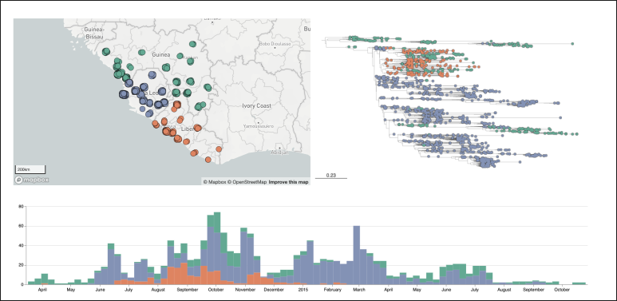

Welcome to The Microreact Cookbook
This 'cookbook' has a collection of examples or 'recipes' to show you how to make the most of Microreact. Microreact is a free and online visualisation tool, primarily for genomic data but it can be used for a variety of data visualisation use cases. The typical use case is to create stunning interactive data visualisations as this example shown below.

Here are figures from a Microreact project based on data from Dudas et al. (2017)1. You can view the interactive dashboard at https://microreact.org/project/west-african-ebola-epidemic
- All examples here use the publicly available version of Microreact at microreact.org
- For detailed description of specific features in Microreact, please read the manual
- If you have feedback and questions about Microreact, please see the contact instructions here
Tip
Microreact can be installed behind your firewall to enable you to visualise sensitive data safely. To request a quote for the supported, Docker-packaged instance, please email microreact(at)cgps.group.
License
Unless otherwise stated, content presented here is under a CC BY-SA 4.0 licence, which basically means you are free to:
- Share — copy and redistribute the material in any medium or format for any purpose, even commercially.
- Adapt — remix, transform, and build upon the material for any purpose, even commercially.
Given:
- Attribution — You must give appropriate credit , provide a link to the license, and indicate if changes were made . You may do so in any reasonable manner, but not in any way that suggests the licensor endorses you or your use.
- ShareAlike — If you remix, transform, or build upon the material, you must distribute your contributions under the same license as the original.
How to use this cookbook
The best way to use this cookbook is to browse the various recipes listed on the right, and try to recreate them yourself with the example data provided. These will hopefully provide inspiration for possible visualisations you can create with your own data. You can save these recipes as a pdf, by using your browser's print function and choosing Save as pdf as the printer.
If you have never used Microreact before, please start with the recipe, Microreact classic - uploading data. If you are feeling adventurous you can try a detail tutorial that include a number of recipes here.
-
Dudas G et al. Virus genomes reveal factors that spread and sustained the Ebola epidemic. Nature. 2017 Apr 20;544(7650):309-315. doi: 10.1038/nature22040 ↩